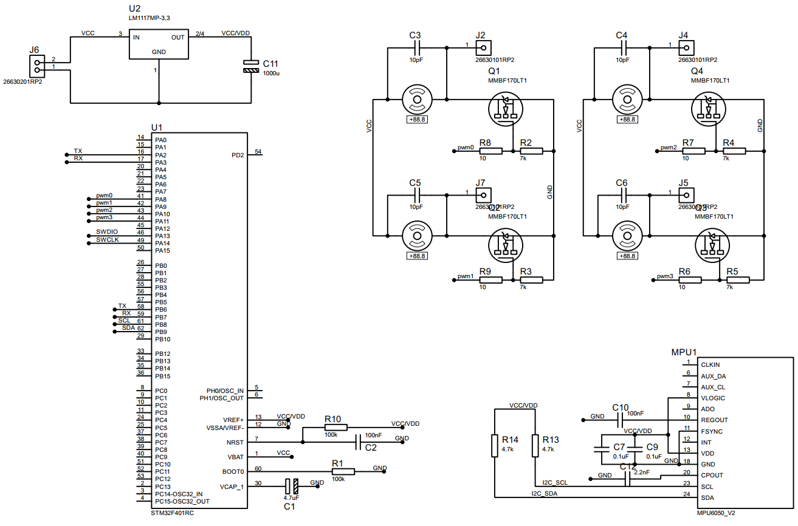
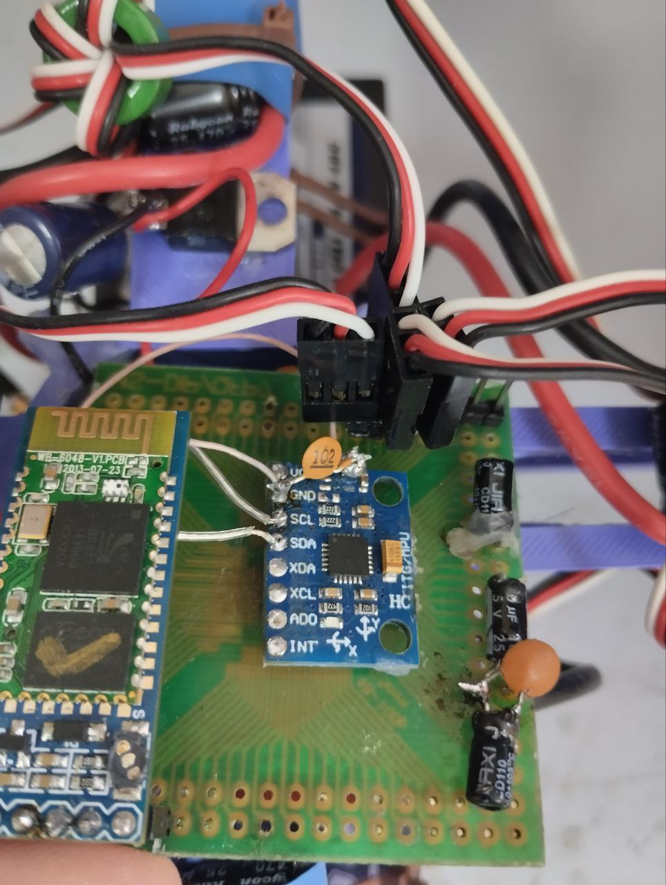
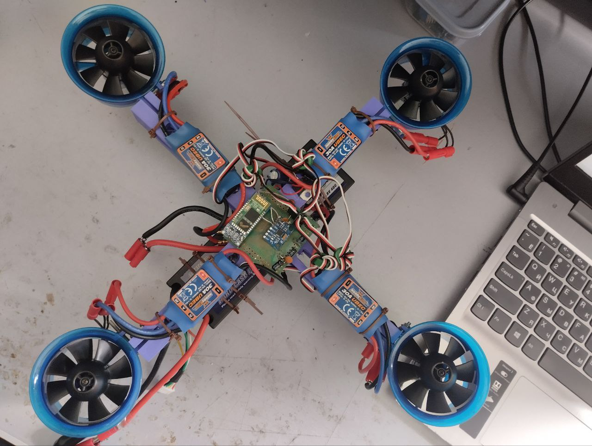
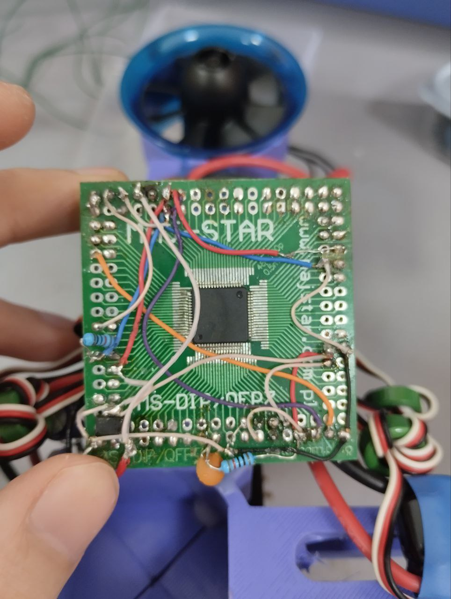
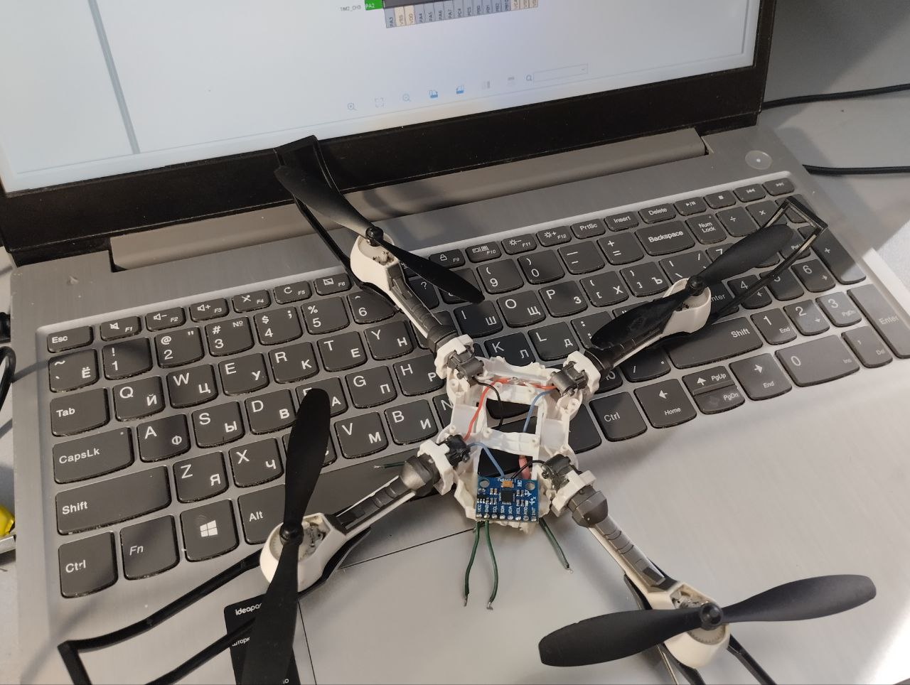
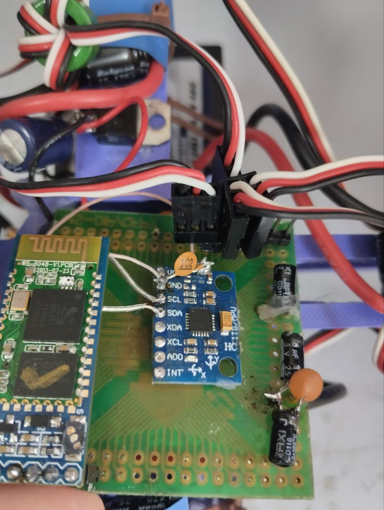
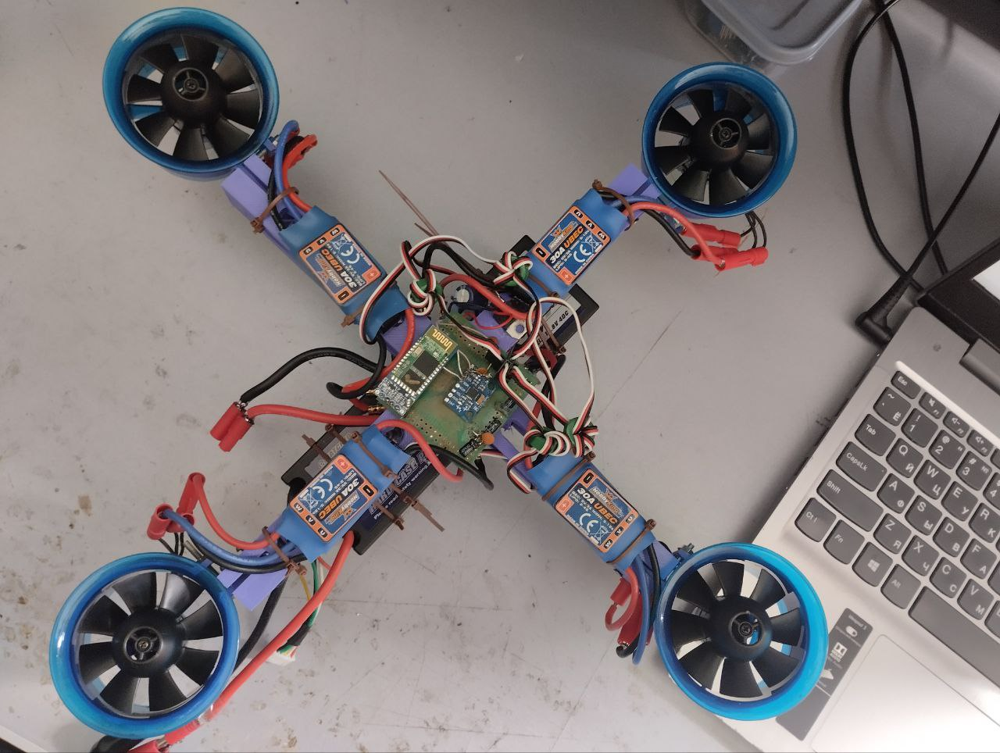
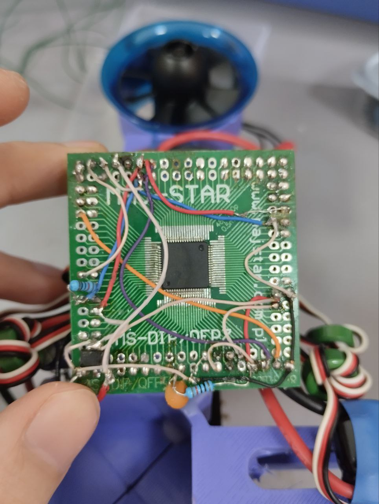
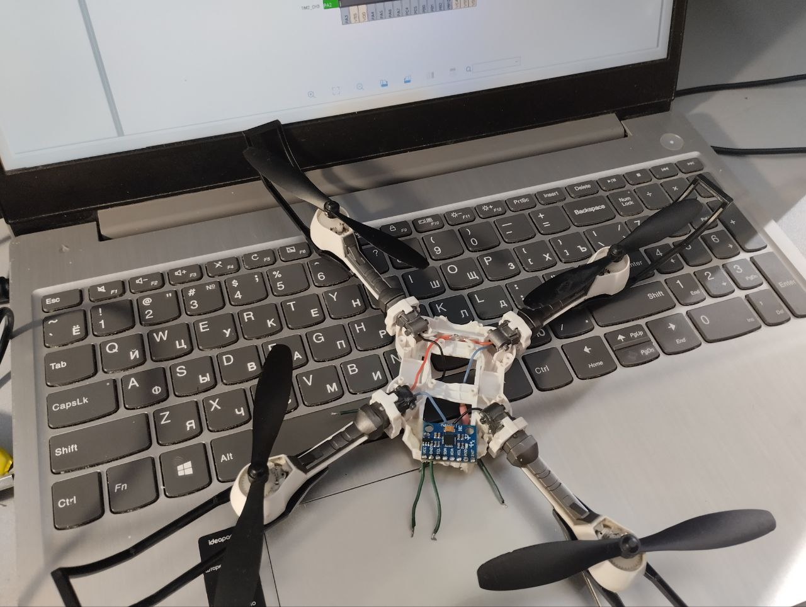

დრონის მართვის სქემა
შესავალი
აღნიშნული პროექტის მიზანია stm32 მიკროკონტროლერის გამოყენებით, დრონის მართვის სქემის შექმნა (flight controller), რომელიც შეძლებს სტაბილურად ფრენას დისტანციურად მიღებული ბრძანებების შესაბამისად.
მთავარი ნაწილი
პროექტის დასაწყისში ბაზად ვიყენებდი მუდმივი ძაბვის ძრავებიან მინი დრონს (იხ. სურათები ქვემოთ).
სქემა მოიცავდა 4 ცალ სე(საერთო ემიტერულ) ტრანზისტორულ გამაძლიერებელ სქემას. თითოეულ მათგანზე დასმული მქონდა დრონის თითო ძრავი, მიკროკონტროლერის გამოყენებით pwm
განივ იმპულსური მოდულირებით ვახდენდი ძრავის ბრუნვის სიჩქარის რეგულირებას. საბოლოოდ გამოჩნა პრობლემა - ძრავები ძალიან სუსტია, ბატარეების და მიკროსქემის წონის აწევა კი ვერ ხერხდებოდა.
გადავწყვიტე, რომ ამეღო EDF BLDC ძრავები, რომელებიც გაცლიებით ძლიერია. დამჭირდა ძრავის დამჭერების და ჩონჩხის (frame) solidworks პროგრამაში დახაზვა და 3d პრინტერზე დაბეჭდვა.
ქვემოთ სურათებზე ხედავთ ძრავის დამჭერს და ღერძის ნაწილს. ძრავები ღერძის ცენტრისკენ 12 გრადუსით მაქვს გადახრილი, რამაც დრონის სტაბილიზირება უნდა გაამარტივოს.
მესამე სურათი კი არის აწყობილი ვერსია.
მუშა სქემის ელექტრონული მოდელი
ელექტრული სქემის მუშაობის აღწერა
ზემოთ მარცხნივ ვხედავთ 3.3ვ ძაბვის რეგულატორს, რომელსაც კვება ბატარეიდან მიეწოდება.
სქემის მთავარ ნაწილს წარმოადგენს STM32F401RC მიკროკონტროლერი, რომელიც დაკავშირებულია, GY-521 მოდულთან I2C პროტოკოლით,
HC-05 ბლუთუზ მოდულთან UART პროტოკოლით (PA2 და PA3 პინებით, ბლუთუზ მოდულის ალტერნატივა იყო ESP-01, რომელსაც დასაწყისში ვიყენებდი მინი დრონზე,
მაგრამ რატომღაც შემდეგ ბლუთუზ მოდულით გავაგრძელე)
და ბოლოს ძრავების დრაივერებს, რომელიც საჭირო იყო მინი დრონის DC ძრავებისთვის, BLDC ძრავებზე გადასვლის შემდეგ კი ეს ნაწილი მოვაშორე და pwm-ის
ოთხივე გამოსასვლელი პინი bldc ძრავების ESC დრაივერების signal (pwm) პინებზე დავაერთე.
ESP-01-ს ვუკავშირდებოდი UART პროტოკოლით 115200 baud rate-ით, რომელსაც ვამუშავებდი AP (access point) რეჟიმში და კონფიგურაციას ვახდენიდი AT ბრძანებებით.
მეორე ვარიანტია HC-05 ბლუთუზ მოდულის გამოყენება, 9200 baud rate-ზე, რომელიც ბევრად უფრო მარტივი პროტოკოლით მუშაობს.
სენსორები
პროექტში გამოყენებული მაქვს Gy-521 მოდული, რომელიც მოიცავს გიროსკოპისა და აქსელერომეტრის მოდულებს.
გიროსკოპის მიერ მოცემული კუთხური აჩქარების ერთმაგი ინტეგრირებით ვიგებ გადახრის კუთხეებს სამი მიმართულებით.
აქსელერომეტრის აჩქარების ვექტორების საშუალებით კი ვიგებ ასევე ამ კუთხეებს.
გიროსკოპის მიერ მოცემული მონაცემი სანდოა დროის მოკლე მონაკვეთში, მაგრამ დროის დიდ მონაკვეთში ახასიათებს დრეიფი;
აქსელერომეტრს არ ახასიათებს დრეიფი, მაგრამ სამაგიეროდ აქვს ხმაური. შემავსებელი ფილტრის (complementary filter) გამოყენებით
ვაზავებ ამ ორი სენსორის მონაცემებს.
აქსელერომეტრის მონაცემები გადის დაბალი სიხშირის ფილტრში, გიროსკოპს კი ინტეგრირების შემდეგ მაღალი სიხშირის ფილტრში,
რის შემდეგაც კი ხდება აჯამვა, შედეგი არის ის, რომ ვიშორებთ ამ ორივე სენსორის არასასურველი მხარეებს (გიროსკოპის დრეიფი და აქსელერომეტრის ხმაური).
PID - პროპორციული, ინტეგრარული და დიფერენციალური რეგულირება. PID რეგულირების გამოყენებით ვახდენ დრონის სამივე მიმართულებით სტაბილიზებას.
მიკროკონტროლერის ალგორითმის აღწერა (ფუნქციები)
ვახდენ პერიფერიების ინიციალიზებას. While loop-ში ვამუშავებ გიროსკოპის და აქსელერომეტრის მონაცემებს.
void PID_Roll(float pv);
დრონის Y მიმართულებაზე შემოსული კუთხის მიხედვით ვუშვებ PID რეგულირების ფუნქციას.
void PID_Pitch(float pv);
დრონის X მიმართულებაზე შემოსული კუთხის მიხედვით ვუშვებ PID რეგულირების ფუნქციას.
void Send_all(float, float, uint16_t, uint16_t, uint16_t, uint16_t);
ვაგზავნი ბლუთუზ მოდულით 2 float და 4 uint16_t ცვლადს.
void HAL_UART_RxCpltCallback(UART_HandleTypeDef *huart);
ვიღებ ბლუთუზ მოდულით კომპიუტერში ტერმინალიდან გამოგზავნილ ბრძანებებს.
ძრავების მართვის ფუნქციები.
void motor0_plus(uint16_t pwm);
void motor1_plus(uint16_t pwm);
void motor2_plus(uint16_t pwm);
void motor3_plus(uint16_t pwm);
void motor0_minus(uint16_t pwm);
void motor1_minus(uint16_t pwm);
void motor2_minus(uint16_t pwm);
void motor3_minus(uint16_t pwm);
გამოყენებული დეტალების ჩამონათვალი
Gallery
 






